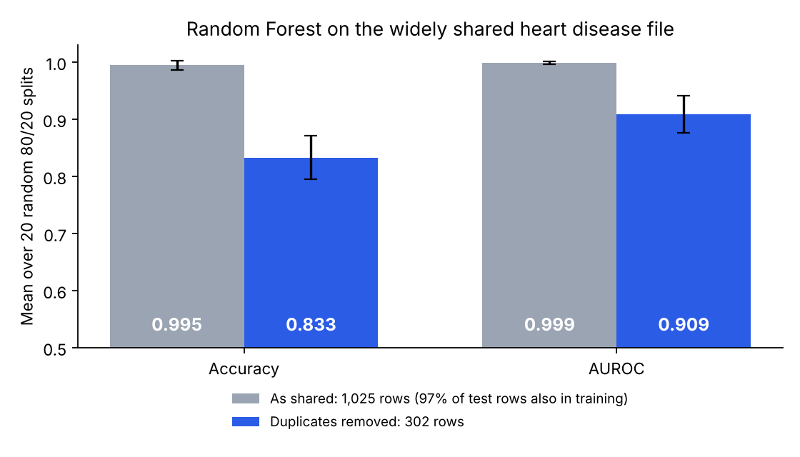
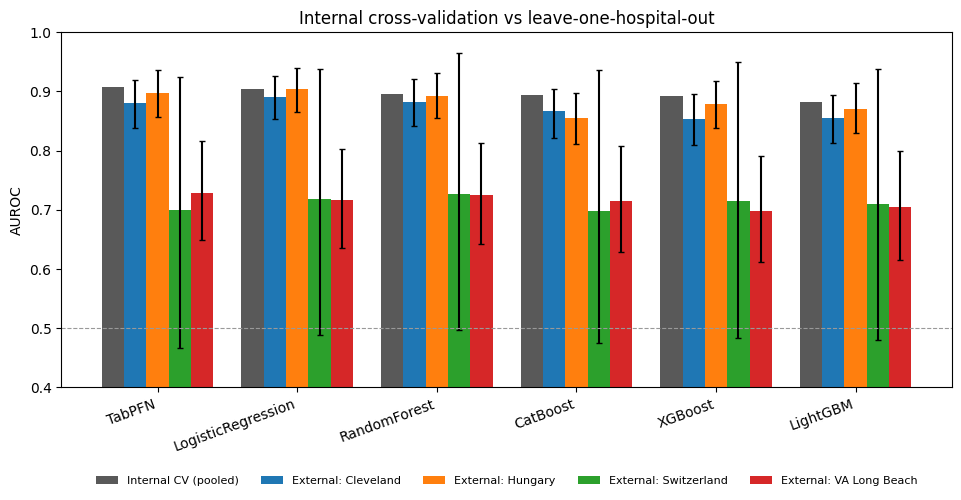
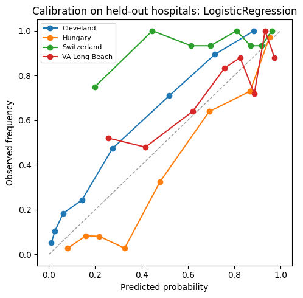
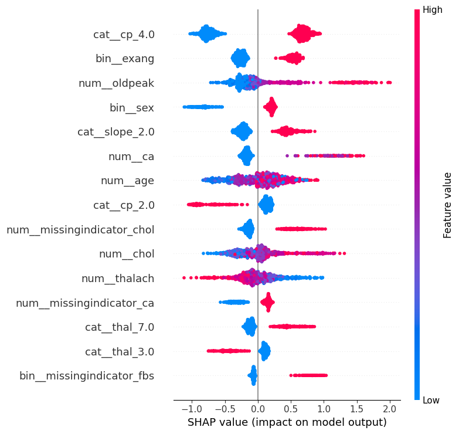

Experiment · Clinical prediction
My 2022 heart disease model scored 92%. Duplicate rows and one hospital explain why that number meant little
I rebuilt an old project with six models, four hospitals and a stricter test. The models were fine. The way I had tested them was not.
By Muzammal Hussain · 31 October 2026 · 6 min read
In 2022 I compared Random Forest, XGBoost and a neural network for predicting heart disease from 13 routine measurements: age, chest pain type, blood pressure, cholesterol, an exercise test and so on. Random Forest won with 92% accuracy. This week I rebuilt the project from scratch to see whether that number still stands. It does not, and the reasons are more useful than the number was.
Key findings
- In the 1,025-row heart disease file widely shared on Kaggle, 97% of test rows also appear in the training set after a random split. A Random Forest scores 99.5% accuracy on it. With the duplicates removed it scores 83%.
- On clean data from four hospitals, plain logistic regression (AUROC 0.904) was level with TabPFN, a 2025 tabular foundation model (0.907), and ahead of XGBoost, LightGBM and CatBoost.
- Tested on a hospital it had never seen, every model dropped to about 0.70 to 0.73 AUROC at VA Long Beach, against about 0.90 in internal testing.
- Predicted risks did not carry over between hospitals: they were too high in Hungary and too low in Switzerland and VA.
- The models partly learned which hospital a patient came from, through which measurements were missing.
The data
The heart disease databases on the UCI Machine Learning Repository come from four hospitals around 1988: the Cleveland Clinic, the Hungarian Institute of Cardiology in Budapest, the VA Medical Center in Long Beach and University Hospital Zurich. The label is whether an angiogram showed a major blood vessel narrowed by more than 50%. I used the original four files, kept the hospital on every row and removed 2 exact duplicates, leaving 918 patients. A cholesterol or blood pressure of 0 was treated as missing, because that is how the Switzerland and VA files record "not measured".
| Hospital | Patients | With disease |
|---|---|---|
| Cleveland | 303 | 46% |
| Hungary | 293 | 36% |
| Switzerland | 123 | 93% |
| VA Long Beach | 199 | 74% |
Why 99.5% means nothing
The most popular heart disease file on Kaggle has 1,025 rows, but only 302 of them are different. The rest are copies. Split it at random into training and test sets, and almost every test patient already has an identical twin in the training set. The model does not need to predict anything; it only needs to remember. I repeated a random 80/20 split 20 times with and without the copies, using the same Random Forest each time.

With the copies, 97.1% of test rows were already in training, and accuracy reached 99.5%. Without them, accuracy fell to 83.3%. The features and labels in my 2022 slides match this file, so my 92% was most likely inflated in the same way, though I can no longer re-run that exact code. Published papers still report results on this 1,025-row file, so it is worth counting unique rows before trusting any score on it.
Six models, tested properly
I compared logistic regression, Random Forest, XGBoost, LightGBM, CatBoost and TabPFN, a transformer pre-trained on millions of synthetic tables and published in Nature in 2025. Each model kept fixed default settings, and all data preparation, such as filling in missing values, was learned only from the training part of each split. First, a normal internal test: 5-fold cross-validation repeated 5 times on all 918 patients.
| Model | AUROC | Calibration error |
|---|---|---|
| TabPFN | 0.907 ± 0.018 | 0.062 |
| Logistic regression | 0.904 ± 0.015 | 0.066 |
| Random Forest | 0.895 ± 0.023 | 0.073 |
| CatBoost | 0.894 ± 0.024 | 0.075 |
| XGBoost | 0.893 ± 0.020 | 0.070 |
| LightGBM | 0.882 ± 0.022 | 0.097 |
The whole spread, 0.88 to 0.91, is about as large as the variation from one fold to the next. TabPFN was marginally first, but the oldest and simplest model was level with it. With 13 features and under a thousand patients, there is not much for a complex model to find that a straight line misses.
A new hospital is a different test
Internal cross-validation mixes patients from all four hospitals into every training set. A model used in a new hospital does not get that luxury. So I trained on three hospitals and tested on the fourth, once for each hospital, and put 95% confidence intervals on every result by resampling patients.

Cleveland and Hungary held up at 0.85 to 0.90. VA Long Beach did not: every model fell to between 0.70 and 0.73, and even the top of each interval (0.79 to 0.82) stayed below the internal scores. Specificity there, the share of healthy patients correctly cleared, dropped to about 0.56. Switzerland looks similar, but I would not read anything into it: 115 of its 123 patients had disease, so its score rests on 8 healthy people and its interval runs from about 0.47 to 0.97.
The risks stop meaning what they say
A model that says "70% risk" should be right about 70% of the time for such patients. That roughly held inside the pooled data, with calibration errors of 0.06 to 0.10. It broke between hospitals, because they differ so much in how many patients are ill: 36% in Hungary, 93% in Switzerland.

Across the six models, the real number of patients with disease was 0.65 to 0.79 times the predicted number in Hungary, so risks were too high, and 1.31 to 1.48 times in Switzerland and 1.05 to 1.23 times at VA, so risks were too low. A hospital that took one of these models would need to recalibrate it on its own patients before trusting any single percentage.
The model learned where patients came from
SHAP values show how much each input pushed a prediction up or down. For XGBoost, the strongest signals were the ones a cardiologist would expect: chest pain with no typical symptoms, chest pain brought on by exercise, ST depression on the exercise test, male sex, a flat ST segment and the number of narrowed vessels.

But three of the top 15 inputs say only whether a value was missing: cholesterol, vessel count and fasting blood sugar. No Switzerland patient has a cholesterol value, and 93% of them have disease, so "cholesterol not recorded" mostly means "this patient is from Zurich". The model picked up the hospital's record-keeping, not the patient's heart. When I removed the three measurements that are mostly missing outside Cleveland (ST slope, vessel count and thallium test), the score fell at Cleveland, which records them, and rose slightly at Switzerland and VA for most models. The intervals overlap, so this is a hint rather than proof.
Who does it work for?
For logistic regression, the model with the best average score across held-out hospitals, AUROC was 0.916 for the 193 women and 0.882 for the 725 men, with overlapping intervals. It was lowest for patients aged 60 and over, 0.837 (0.774 to 0.893), the group in which 73% had disease.
What I take from it
- Count unique rows before believing a score. Duplicates turned 83% into 99.5% here.
- On small tables, a simple model is a serious baseline. A newer model needs to beat it clearly, and here none did.
- Internal cross-validation answers "how well does this work on patients like these?", not "how well will it work in another hospital?".
- When data from several sources are pooled, missing values can quietly tell the model where each row came from.
Limitations
- The data are from the 1980s, from four hospitals, and the label is an angiogram result rather than a modern clinical outcome.
- Model settings were fixed in advance, not tuned. Tuning might change the ranking slightly, but not the size of the drop at a new hospital.
- Switzerland's results are too uncertain to interpret, and subgroup results come from one model only.
- This is a research experiment, not a medical device, and must not be used for diagnosis.
Reproduce the experiment
The repository has the full pipeline as a Python package with tests, the Kaggle notebook, and every table and figure in this article. The whole notebook runs on a free Kaggle CPU; TabPFN is the slowest part.
Data: UCI Heart Disease databases (Janosi, Steinbrunn, Pfisterer and Detrano, 1988), described in Detrano et al., American Journal of Cardiology, 1989; leakage audit on the Kaggle dataset johnsmith88/heart-disease-dataset. TabPFN: Hollmann et al., Nature, 2025. This is a small engineering experiment, not a peer-reviewed paper.